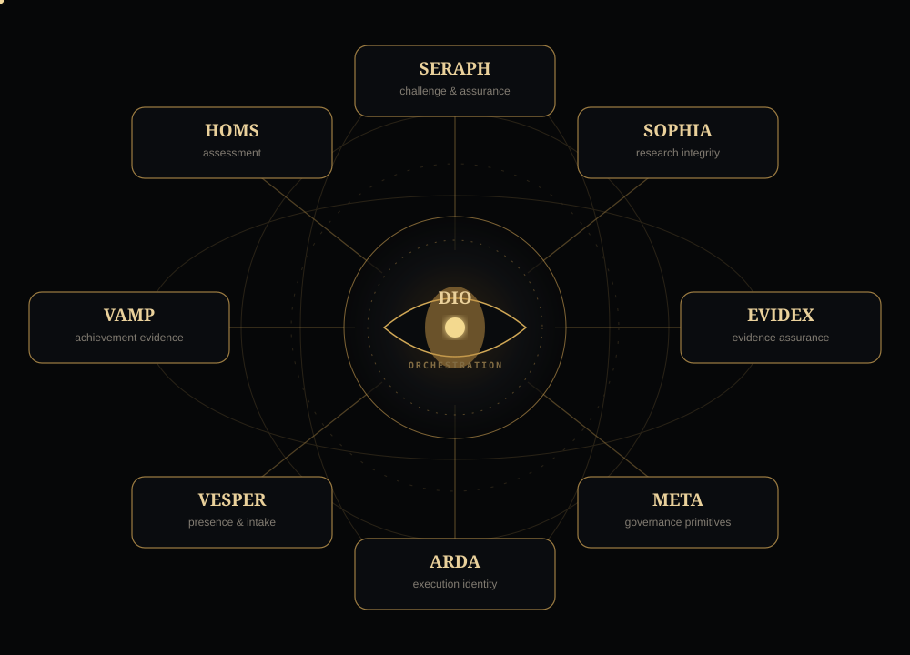

EDUCATION & ASSESSMENT
Exam & Assessment Studio
Create curriculum-aware exams, memoranda, rubrics and review-ready assessment packs while keeping educator judgement with the educator.
Powered by HOMS
DIO WORKFLOWS / 2026
DIO is an operating architecture for turning reusable intelligence, workflows and evidence systems into governed AI products — with evidence, authority and outcomes kept explicit.

ONE ARCHITECTURE · MULTIPLE PRODUCTS · MULTIPLE MARKETS
DIO lore is the machinery. Commercial products lead with the problem they solve, while the underlying systems stay visible as provenance and platform identity.
Create curriculum-aware exams, memoranda, rubrics and review-ready assessment packs while keeping educator judgement with the educator.
Turn objectives, activity and supporting evidence into a review-ready performance evidence view without manufacturing a rating or employment decision.
Strengthen claims, source fit, citation quality and research reasoning without quietly replacing the scholar who owns the work.
Convert scattered claims, requirements and evidence into a source-mapped review pack with visible gaps, provenance and human-held release.
Structure programme objectives, milestones, benefits and supporting evidence into a governed assurance view for authorised human review.
Turn positioning, audience truth and campaign intent into a customer-facing website package designed to pitch the right problem to the right market.
THE INVESTMENT THESIS
The interesting asset is not any single interface. DIO composes reusable intelligence, evidence, governance, document, market and presence systems into different products while preserving product-specific boundaries.
That changes the economics of expansion: new products can inherit proven capabilities instead of rebuilding their entire operating spine from scratch.

BUILT BEFORE IT WAS PITCHED
DIO has already been exercised through controlled product journeys, custody checks and customer-surface proofs. Those receipts are engineering evidence — not a substitute for independent customers, repeat demand or revenue validation.
Assessment, research, evidence, performance, programme and production workflows have working controlled paths with explicit human authority boundaries.
Vesper, evidence, governance, formatting, market and execution capabilities can be reused across multiple incarnations rather than recreated as isolated apps.
The next evidence that matters is external: real enquiries, real buyers, real delivery, repeat usage and measured economics.
FROM ARCHITECTURE TO MARKET
The machinery exists. Product incarnations exist. The public launch connects those systems to audiences through Site Studio, Market Command, NicheFoundry, Vesper and measurable response.
DIO / ON FILM
Launch announcements, product walkthroughs and controlled demonstrations will show DIO working across radically different problem domains.
FOUNDER / BUILDER
The work began with a recurring question: how can AI perform meaningful professional work without silently losing evidence, provenance or human authority? DIO grew from that constraint into a reusable product architecture.
The public phase now tests the commercial consequence of that architecture: whether the same governed machinery can produce useful products across multiple markets.
START WITH THE PROBLEM
Customer, partner, enterprise lead or investor: give us enough context to route the conversation properly. The intake enters the existing governed public lead pipeline.
 VESPERASK ABOUT DIO
VESPERASK ABOUT DIO